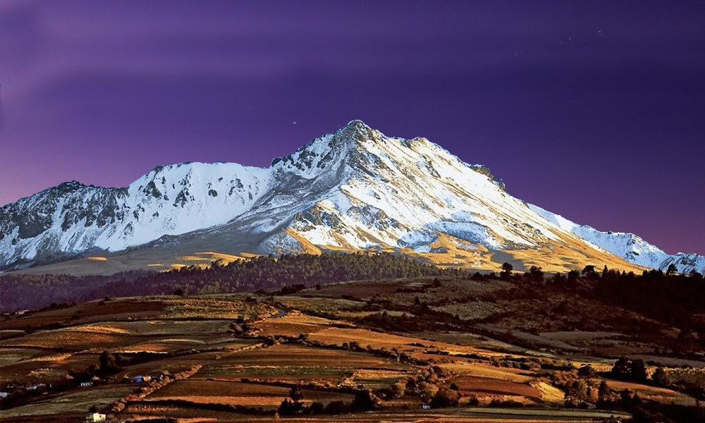

Home
> Zonas naturales
Atractivos turísticos de México
Santuario de la Mariposa Monarca
Conoce más >

Nevado de Toluca
Conoce más >
Cascada de Tamul
Conoce más >
Ría Lagartos
Conoce más >
Sima de las Cotorras
Conoce más >